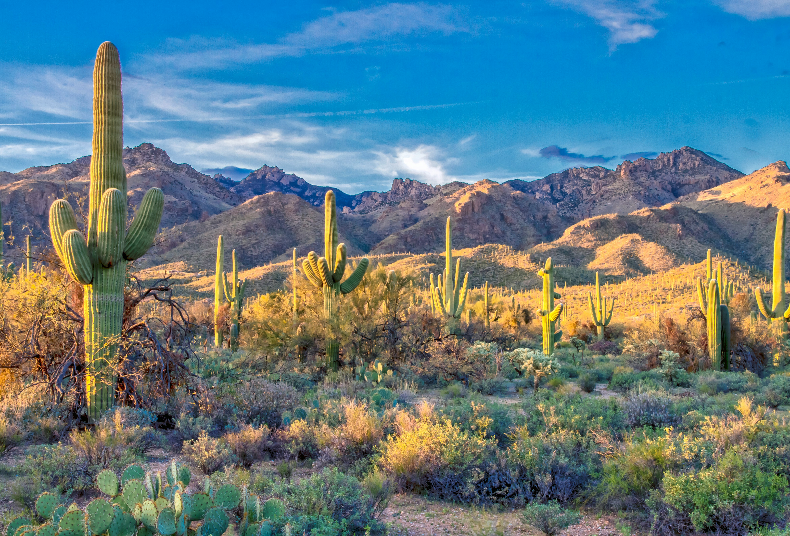

Desert Sky Yurt Stay
Welcome to the most beautiful desert oasis on the planet!

About the property
Escape to a rugged landscape where the horizon never ends. This off-grid desert yurt offers a unique blend of primitive backcountry beauty and essential modern comforts for travelers seeking a true connection with nature. Whether you are pounding the sun-drenched trails or recovering after a long day in the dirt, this space is designed to help you reset, rebuild, and recharge.

Adventure and Relaxation
Hit the terrain hard, then unwind on-site with features designed for recovery.
- Prime Hiking: Access secluded trails right from your doorstep, featuring unique geological formations and ancient desert flora.
- Starlit Skies: Zero light pollution means unfiltered views of the Milky Way and seasonal meteor showers right from your private deck.
- Contrast Therapy: Rejuvenate your muscles in our custom wood-fired sauna, followed by a shocking cold plunge under the open sky.
- Canine Friendly: Pack your best trail partner. A secure, fully fenced yard gives your dog room to roam safely while you rest up.

Your Stay
Your yurt combines circular architecture with high-end amenities to ensure a comfortable desert experience. The open floor plan provides a breathable atmosphere during the day, while the thick insulated walls keep the space cozy when the temperature drops at night. This setup balances the raw feeling of camping with the luxury of a plush queen bed, high-thread-count linens, and a functional kitchenette for preparing your own trail meals.

Desert Wellness Benefits
Modern life is loud, but the desert offers a rare silence that helps reset your nervous system. Utilizing the sauna and cold plunge helps improve circulation and reduce inflammation after a long day of exploring the red rocks. These recovery tools are available 24/7, so you can tailor your wellness routine to your own pace under the sun or stars.

Featured Trails Near Sedona
- Soldier Pass Trail: A moderate 4.5-mile loop that takes you past the Seven Sacred Pools and the Devil’s Kitchen sinkhole.
- Fay Canyon Trail: An easy 2.2-mile stroll through towering red sandstone cliffs perfect for a morning walk with your dog.
- Doe Mountain Trail: A short but steep 1.5-mile climb that rewards you with a 360-degree panoramic view of the desert floor.
Before you head out, check the current local weather conditions to stay safe on the trails.

Sustainable Off-Grid Living
We believe in treading lightly on this ancient land. Our yurt operates entirely on solar power, providing enough energy for warm lighting and device charging without the noise of a generator. We also utilize a greywater system to nourish the local mesquite trees and desert shrubs surrounding the fenced yard. Choosing this experience means you are supporting a travel style that respects the delicate balance of the Arizona ecosystem and preserves it for future generations.

Dedicated On-Site Care for Your Dog
We know that the best adventures include your dog, but some of Sedona's most grueling hikes and local activities aren't safe or allowed for four-legged partners. You don't have to leave them behind in a cramped city kennel or skip the trail. We offer dedicated, on-site care right here at the retreat. While you are out conquering the red rocks, your dog gets to enjoy a secure, fully fenced five-foot perimeter, premium locally made treats, and heavy-duty stainless-steel water bowls. Whether they are high-energy working breeds or large-breed companions, they can safely rest, sniff, and navigate the desert sand under watchful eyes, giving you total peace of mind on the terrain.

Photo by Picture by Patrick Boyer via Pexels
Planning Your Visit
To make the most of your trip, consider arriving before sunset to navigate the desert roads and see the canyon walls' changing colours. Bring comfortable boots for the rocky terrain and plenty of water for your hikes. We provide the organic coffee and the views, while you provide the spirit of adventure.
Ready for Your Desert Escape?
Check Availability & Book Your Yurt Experience